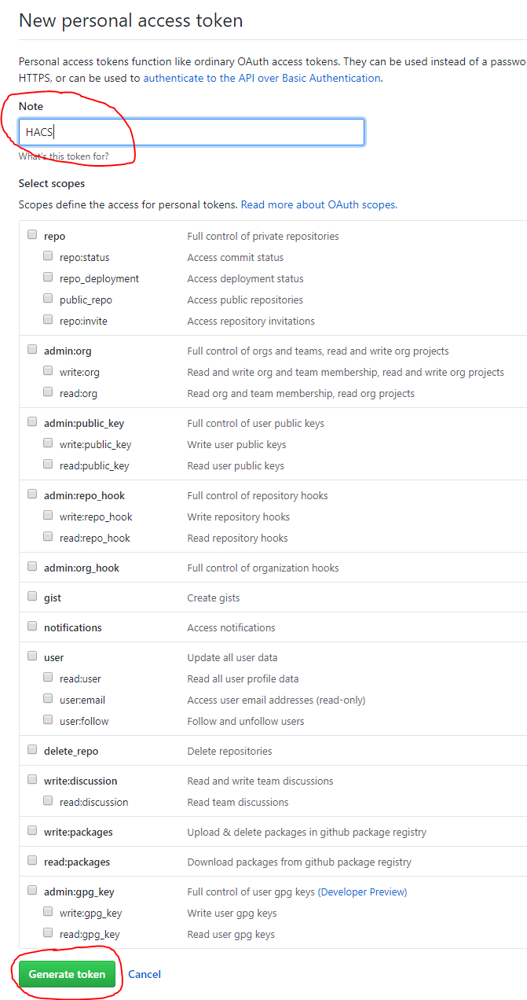

HOME | INSTALLATION | CONFIGURATION | TOKEN | FAQ
Github Personal Access Token
You need to generate an Access Token to your account before you start using this.
Step 1 - Open browser
You are probably looking at this in a browser, so we can probably check this off.
Step 2 - Go to your GitHub "Developer settings"
And then "Personal access tokens." or click here: https://github.com/settings/tokens
Step 3 - Start generation
Click the "Generate new token" button.

If you are asked to login, do so.

Step 4 - Choices
First give it a logical name so that you can recognise it.
Then click the "Generate token" button at the bottom.
You do not need to check any of the boxes.

Step 5 - Copy
Now you see the generated token, this will be the only time you see it, make sure that you copy it manually or by clicking the clipboard icon.